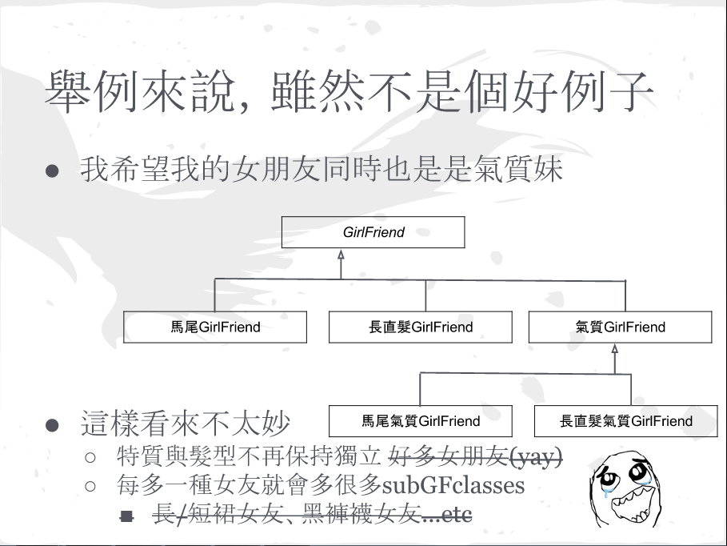
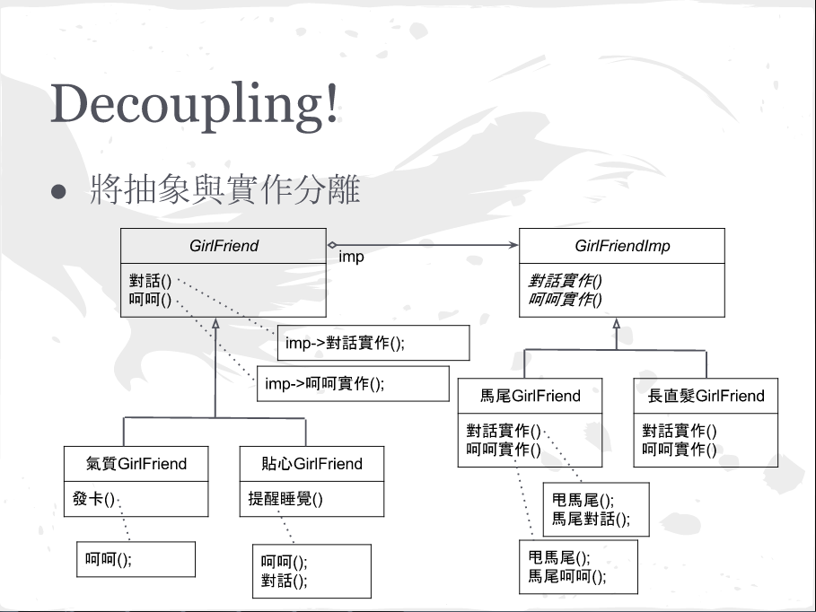
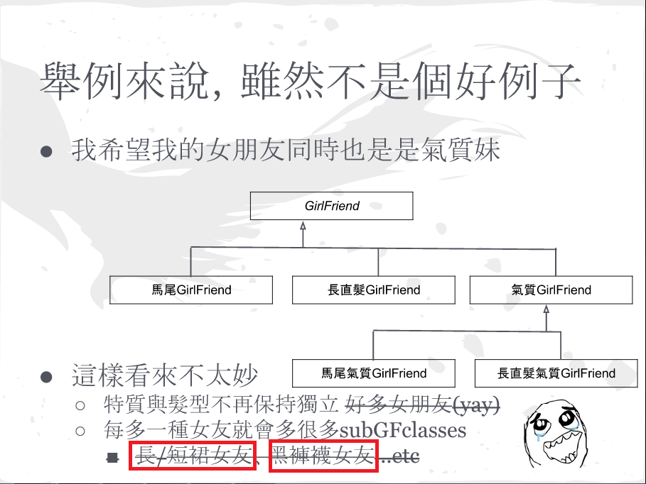

Design Pattern
Decorator & Proxy
Decorator
動機
當一個物件的屬性參數超多選擇的時候
或者屬性只有特定作用的時候
用繼承會生太多class
QCL的野望
  革命尚未成功
使用Decorator
角色們
Component(GirlFriend)
Concrete Component(氣質/貼心GirlFriend)
Decorator(衣著)
Concrete Decorator(長裙/短裙/黑褲襪)
影響
比繼承彈性許多
避免很多層的繼承
Decorator和擁有者沒有主從關聯
很多小物件
相關DP
-
Adapter
A decorator is different from an adapter in that a decorator only changes an object's responsibilities, not its interface; an adapter will give an object a completely new interface.
-
Composite
A decorator can be viewed as a degenerate composite with only one component. However, a decorator adds additional responsibilities—it isn't intended for object aggregation.
-
Strategy
A decorator lets you change the skin of an object; a strategy lets you change the guts. These are two alternative ways of changing an object.
Implement
/* Interface */
var GirlFriend = (function() {
function GirlFriendSetup(imp, 衣著) {
this._imp = imp;
this.衣著 = 衣著;
delete this.GirlFriendSetup;
}
function 對話() {
this._imp.對話實作();
};
function 呵呵() {
this._imp.呵呵實作();
};
function 自拍() {
alert(this.衣著.外觀());
}
return function() {
// define public attribute
this.對話 = 對話;
this.呵呵 = 呵呵;
this.自拍 = 自拍;
this.GirlFriendSetup = GirlFriendSetup;
return this;
};
})();
var GirlFriendImp = (function() {
function GirlFriendImpSetup() {
delete this.GirlFriendImpSetup;
}
function 對話實作() {
throw new Error("我不會對話QAQ").stack;
};
function 呵呵實作() {
throw new Error("我不會呵呵QAQ").stack;
};
return function() {
// define public attribute
this.對話實作 = 對話實作;
this.呵呵實作 = 呵呵實作;
this.GirlFriendImpSetup = GirlFriendImpSetup;
return this;
};
})();
var 服飾 = (function() {
function 服飾Setup(描述) {
this.描述 = 描述;
delete this.服飾Setup;
}
function 外觀() {
return this.描述;
}
return function() {
// define public attribute
this.外觀 = 外觀;
this.服飾Setup = 服飾Setup;
return this;
}
})();
/* Implement */
var 馬尾GirlFriend = function() {
var fn = this;
fn.GirlFriendImpSetup();
function 甩馬尾() {
alert("甩馬尾");
};
function 馬尾對話() {
alert("馬尾安安");
};
function 馬尾呵呵() {
alert("馬尾呵呵");
};
function 對話實作() {
甩馬尾();
馬尾對話();
};
function 呵呵實作() {
甩馬尾();
馬尾呵呵();
};
fn.對話實作 = 對話實作;
fn.呵呵實作 = 呵呵實作;
};
GirlFriendImp.call(馬尾GirlFriend.prototype);
var 長直髮GirlFriend = function() {
var fn = this;
fn.GirlFriendImpSetup();
function 對話實作() {
alert("安安");
};
function 呵呵實作() {
alert("呵呵");
};
fn.對話實作 = 對話實作;
fn.呵呵實作 = 呵呵實作;
};
GirlFriendImp.call(長直髮GirlFriend.prototype);
var 氣質GirlFriend = function(imp, 衣著) {
var fn = this;
fn.GirlFriendSetup(imp, 衣著);
function 發卡() {
fn.呵呵();
alert("掰掰囉");
}
fn.發卡 = 發卡;
};
GirlFriend.call(氣質GirlFriend.prototype);
var 貼心GirlFriend = function(imp, 衣著) {
var fn = this;
fn.GirlFriendSetup(imp, 衣著);
function 提醒睡覺() {
fn.呵呵();
fn.對話();
alert("睡覺囉");
}
fn.提醒睡覺 = 提醒睡覺;
};
GirlFriend.call(貼心GirlFriend.prototype);
var 長裙 = function() {
var fn = this;
fn.服飾Setup("長裙");
}
服飾.call(長裙.prototype);
var 短裙 = function() {
var fn = this;
fn.服飾Setup("短裙");
}
服飾.call(短裙.prototype);
var 褲襪 = function(顏色) {
var fn = this;
fn.服飾Setup([顏色, "褲襪"].join(""));
fn.顏色 = 顏色;
}
服飾.call(褲襪.prototype);
var decorator = function() {
GirlFriend1 = new 氣質GirlFriend(new 馬尾GirlFriend(), new 長裙());
console.log(GirlFriend1);
GirlFriend1.發卡();
GirlFriend1.自拍();
GirlFriend2 = new 貼心GirlFriend(new 長直髮GirlFriend(), new 短裙());
console.log(GirlFriend2);
GirlFriend2.提醒睡覺();
GirlFriend2.自拍();
}
Proxy
種類
遠端代理（Remote）：代理遠端程時執行，例如我們可以透過WebService的WSDL定義產生中介檔的函式庫，透過這個函式庫就可以存取WebService。
虛擬代理（Virtual）：將需要秏費大量時間或是複雜的實體，利用代理模式的物件代替。
安全代理（Protect or Access）：控制物件存取時的許可權。
智慧參考（Smart Reference）：提供比原有物件更多的服務。
還是拿QCL當例子吧

角色們
Proxy
Subject(Proxy Interface)
RealSubject(GirlFriend)
實例
RPC Proxy
Copy-on-Write
Smart Pointer
相關DP
-
Adapter
An adapter provides a different interface to the object it adapts. In contrast, a proxy provides the same interface as its subject. However, a proxy used for access protection might refuse to perform an operation that the subject will perform, so its interface may be effectively a subset of the subject's.
-
Decorator
Although decorators can have similar implementations as proxies, decorators have a different purpose. A decorator adds one or more responsibilities to an object, whereas a proxy controls access to an object.
Implement
/* util */
function sleep(w){var t=new Date;while(new Date-t<w);}
/* Interface */
var Reciever = (function() {
function 收情書() {
console.log("已收到");
}
return function() {
this.收情書 = 收情書;
return this;
};
})();
/* Implement */
var Boy = function() {
var fn = this;
function 遞情書(目標) {
console.log("已送出");
目標.收情書();
};
function 寫情書() {
console.log("開始寫");
sleep(5000);
console.log("寫完了");
};
fn.遞情書 = 遞情書;
fn.寫情書 = 寫情書;
}
var Girl = function() {
var fn = this;
/* need time to find a girl */
sleep(3000);
};
Reciever.call(Girl.prototype);
var BoyProxy = function() {
var fn = this;
setTimeout(function() { fn.girl = new Girl(); }, 0);
function 收情書() {
if (fn.girl) {
console.log("代收已送出");
fn.girl.收情書();
} else {
console.log("還沒找到女孩");
}
}
fn.收情書 = 收情書;
}
Reciever.call(BoyProxy.prototype);
var proxy = function() {
/* world 1 */
console.log("world 1 start: " + new Date);
QCL1 = new Boy();
Girl1 = new Girl();
QCL1.寫情書();
QCL1.遞情書(Girl1);
console.log("world 1 end: " + new Date);
/* world 2 */
console.log("world 2 start: " + new Date);
QCL2 = new Boy();
好友1 = new BoyProxy();
QCL2.寫情書();
QCL2.遞情書(好友1);
console.log("world 2 end: " + new Date);
};